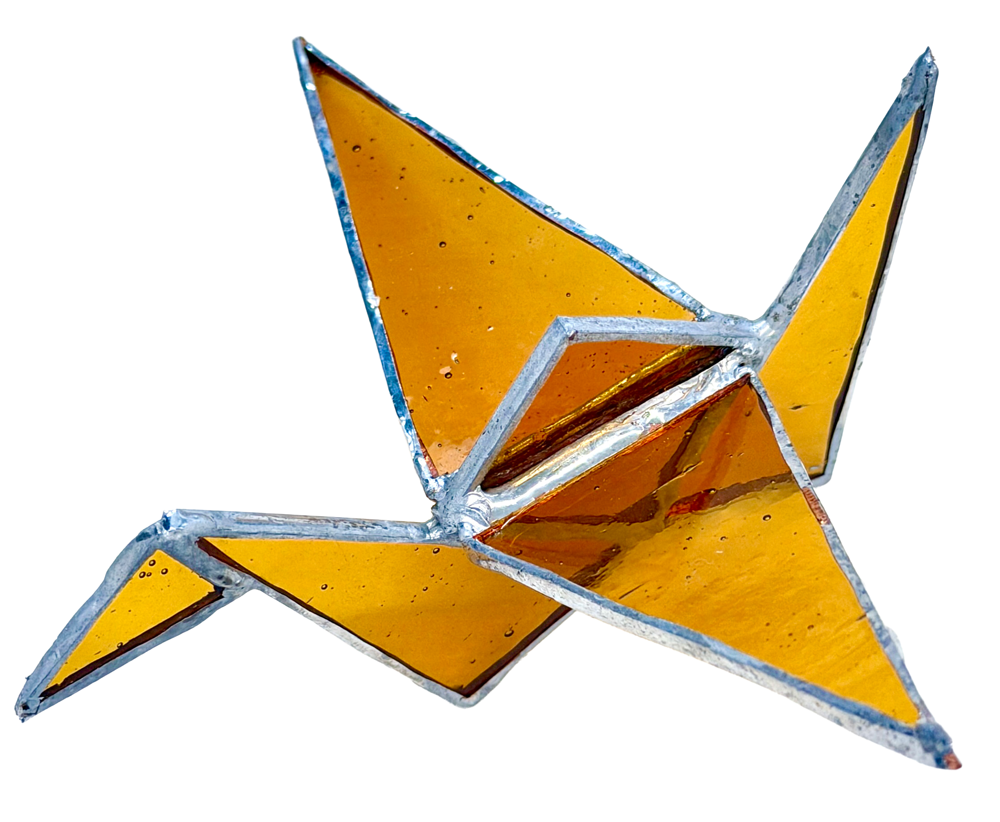

As a decorative art form with a long history, stained glass can still be found in the corners of everyday
life today. In this course’s practice, I chose stained glass as a craft discipline to experience firsthand,
with the goal of learning the skill and recreating the beauty of this art form while also bringing in my
perspective as a media designer. Through this process, I aim to explore new modes of expression for stained
glass and to see what kinds of sparks can emerge when media design intersects with traditional aesthetics.
Collection

Mondrian?
Date Created: Sep 23, 2025
Production Time: 2HRs
Production Time: 2HRs

Star
Date Created: Sep 23, 2025
Production Time: 1HR
Production Time: 1HR

Broken Window
Date Created: Sep 25, 2025
Production Time: 4HRs
Production Time: 4HRs

Snowflake
Date Created: Oct 01, 2025
Production Time: 30MINs
Production Time: 30MINs

Christmas Set
Date Created: Oct 02, 2025
Production Time: 1HR 40MINs
Production Time: 1HR 40MINs

Flower Window Glass
Date Created: Oct 09, 2025
Production Time: 4HRs
Production Time: 4HRs

Cross Window Glass
Date Created: Oct 15, 2025
Production Time: 4HRs
Production Time: 4HRs

Glass Crane
Date Created: Oct 16,2025
Production Time: 2HRS
Production Time: 2HRS

Stained Glass Tool Case
Date Created: Oct 26, 2025
Production Time: 6HRs
Production Time: 6HRs

Jewelry Plate
Date Created: Oct 30, 2025
Production Time: 1HR 30MINs
Production Time: 1HR 30MINs

Stained Glass Mirror
Date Created: Nov 06, 2025
Production Time: 2HRS
Production Time: 2HRS

Flower Set
Date Created: Nov 20, 2025
Production Time: 3HRs
Production Time: 3HRs